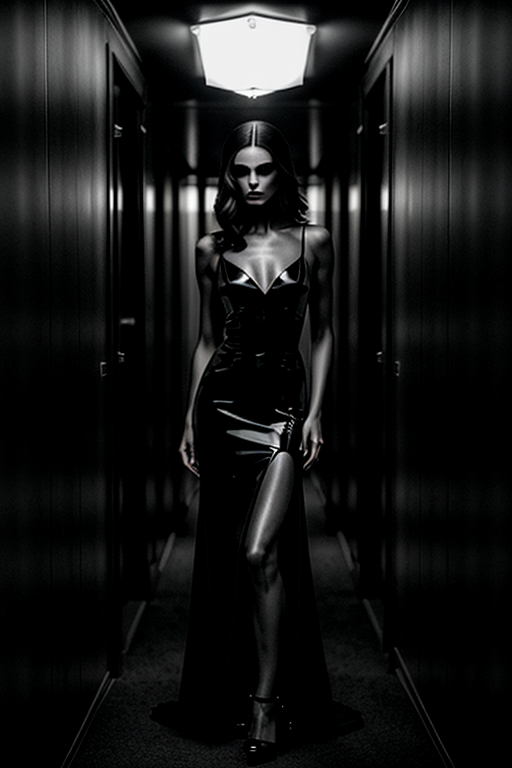
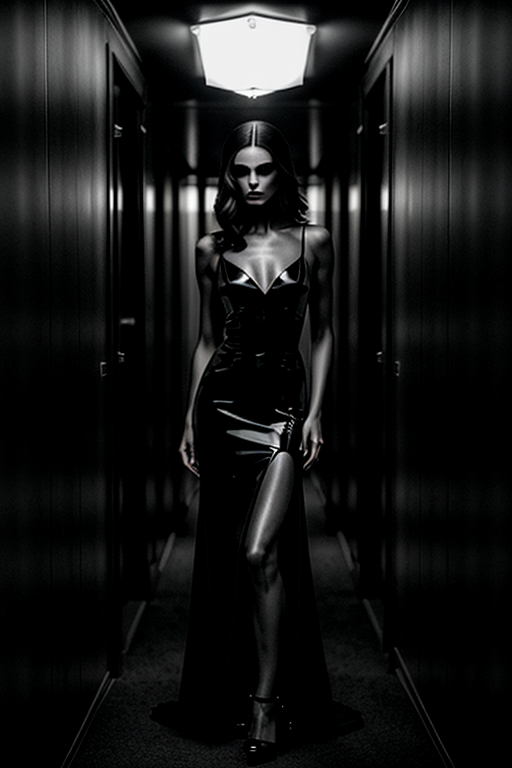
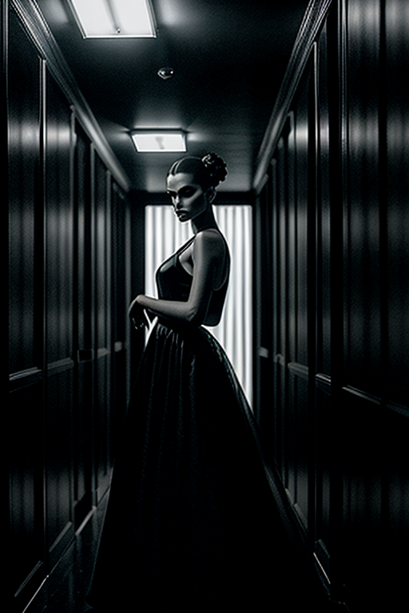
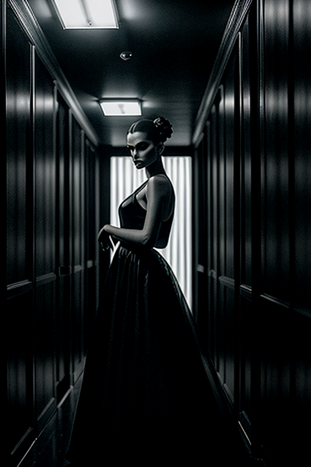

This set explores dark girl night vibe through minimal aesthetics and warm tone under golden-hour glow. Compositions use leading lines with urban backdrop, keeping focus clear and tidy. Details like office styling and balanced colors make browsing easy.


 



 



 -->
-->This gallery presents 20 curated images, including: how to create dark aesthetic photos; page; page; page; page.